Sigla iniziale |
| In A Mirror Darkly |
La sigla iniziale di Enterprise è una carrellata su vari avvenimenti della storia dell'aeronautica e del volo spaziale:
 |
Nave polinesiana, uno dei primi popoli che ha utilizzato le stelle e i venti per esplorare il mare. |
 |
H.M.S. Enterprize (1709-1749) |
| 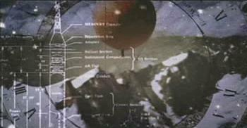 | Pallone-sonda. In sovrimpressione lo schema di una navicella Mercury installata su un missile vettore. |
| 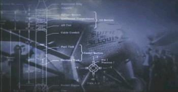 | Spirit of St. Louis, l'aereo in cui Charles Lindbergh compì la
prima trasvolata atlantica in solitario il 20 maggio 1927, partendo da New
York e arrivando a Parigi 33 ore dopo. La prima trasvolata dell'Atlantico in
assoluto è stata compiuta da John Alcock e Arthur Whitten Brown il 14 e 15
giugno 1919. In sovrimpressione lo schema di una navicella Mercury installata su un missile vettore Redstone. |
| 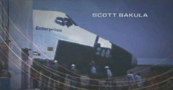 | Enterprise, il primo space shuttle utilizzato solamente per l'addestramento dei piloti. L'Enterprise era privo di motori e veniva sganciato da un Boeing 747 della NASA per addestrare i futuri piloti alle operazioni di rientro. Il primo space shuttle che ha completato una missione nello spazio è stato il Columbia. Con ogni probabilità la sequenza è stata ritoccata, in quanto il nome degli shuttle è più arretrato e nelle foto dell'Enterprise disponibili la striscia nera a cavallo della prua non è così pronunciata. |
| 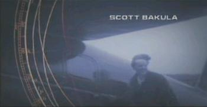 | Amelia Earhart (la cui storia viene ripresa anche in The 37's) che ha volato in solitaria a cavallo dell'Atlantico nel 1932. |
| 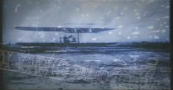 | Primo volo dei fratelli Wright del 17 dicembre 1903 a Kitty Hawk, USA.
Orville Wright è stato il primo uomo a volare con un mezzo più pesante
dell'aria con propulsione autonoma. In sovrimpressione un vettore Redstone. |
 |
Aereo-razzo sperimentale X-1 in volo con cui Chuck Yeager il 14 ottobre
1947 superò, per primo nella storia dell'aviazione, la barriera del suono. Sullo sfondo i disegni dello studio sul volo di Leonardo Da Vinci. |
 |
Mezzo sottomarino monoposto Deep Flight I di Graham Hawkes. |
| 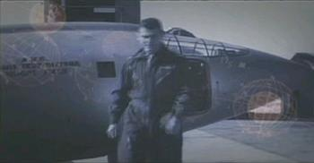 | Aereo-razzo sperimentale X-1 in pista con il portello di accesso aperto, l'uomo è l'asso dell'USAF Chuck Yeager, 1947. |
 |
Astronauti durante l'imbarco in una missione Apollo. |
 |
Alan Shepard, che il 5 maggio 1961, 23 giorni dopo Gagarin, fu il primo americano lanciato nello spazio con un volo suborbitale di soli 15 minuti. Questa immagine lo ritrae durante la preparazione per la missione Apollo XIV. |
| 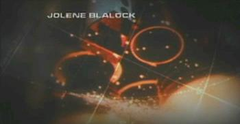 | Accensione dei motori dello shuttle. |
| 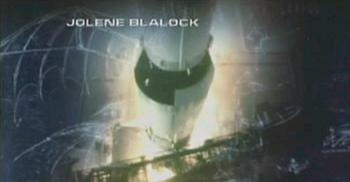 | Partenza di un vettore Saturno. Sullo sfondo i disegni dello studio sul volo di Leonardo Da Vinci. |
| 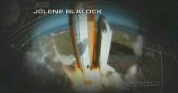 | Partenza dello space shuttle. |
| 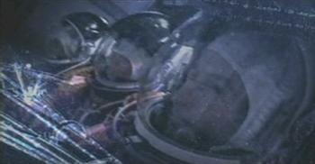 | Astronauti nel ponte intermedio dello shuttle durante il decollo. |
| 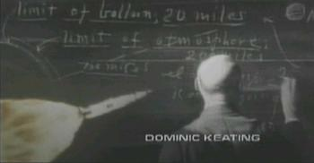 | Robert Goddard. |
 |
Separazione dell'anello interstadio situato fra il primo e secondo stadio del vettore Saturno V; il primo stadio viene sganciato qualche decina di secondi prima. È lo stesso anello che diventa la seconda O della scritta Apollo nel logo del film Apollo 13. |
| 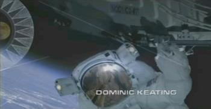 | EVA durante una missione dello shuttle. |
 |
Impronta di piede umano sulla superficie della Luna. |
 |
Modulo lunare (LEM) in fase di allunaggio ripreso dal modulo di comando. In sovrimpressione uno dei primi studi sulle eclissi di sole e di luna. |
| 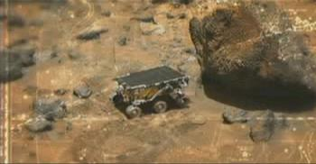 | Modulo Sojourner della sonda Pathfinder che ha esplorato Marte a partire dal 4 luglio 1997. |
| 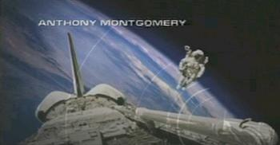 | EVA vista dallo space shuttle senza cavo di sicurezza con un modulo a propulsione indipendente. |
| 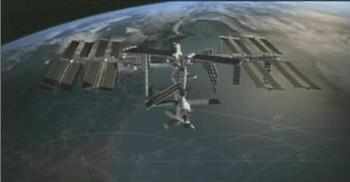 | Stazione Spaziale Internazionale. |
| 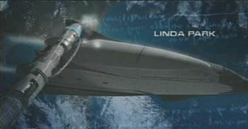 | Possibile evoluzione dello space shuttle, simile al prototipo NASA/Lockheed Martin X-33 con numero di registro OV-165. |
| 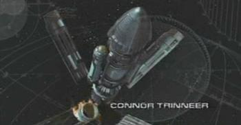 | Phoenix durante il primo volo nel momento in cui estende le gondole di navigazione WARP. |
 |
Una nave di questo tipo la si vede nell'episodio The Expanse. |
| 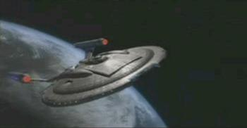 | Enterprise NX-01 |
Questo è il testo della sigla di apertura della serie cantata da Russel Watson, che nel CD di Enterprise è intitolata Where My Heart Will Take Me:
It's been a long road getting from there to here.
It's been a long time but my time is finally near.
And I'll see my dream come alive at last.
I'll touch the sky.
And they're not gonna hold me down no more... No,
they're not gonna change my mind.
Cause I got faith of the heart.
I'm going where my heart will take me.
I got faith to believe. I can do anything.
I got straight of the soul.
And no-one's gonna bend or break me.
I can reach any star.
I got faith, I got faith, faith of the heart.
E questo è il testo della canzone Faith of the Heart di Diane Warren cantata da Rod Stewart, in corsivo sono evidenziate le parti utilizzate per la sigla di Enterprise.
It's been a long road getting from there to here.
It's been a long time but my time is finally near.
And I can feel the change in the wind right now.
Nothing's in my way.
And they're not gonna hold me down no more...
No, they're not gonna hold me down...
Cause I got faith of the heart.
I'm going where my heart will take me.
I got faith to believe. I can do anything.
I got straight of the soul.
And no-one's gonna bend or break me.
I can reach any star.
I got faith, I got faith, faith of the heart.
It's been a long night trying to find my way been through the darkness.
Now I finally have my day. And I'll see my dream come
alive at last.
I'll touch the sky.
And they're not gonna hold me down no more... No,
they're not gonna change my mind.
Cause I got faith of the heart.
I'm going where my heart will take me.
I got faith to believe. I can do anything.
I got straight of the soul.
And no-one's gonna bend or break me.
I can reach any star. I got faith, faith of the heart.
I've known winds so cold, seen the darkest days...
But now the winds I feel are only winds of change.
I've been though the fire and I've been through the rain,
But I'll be fine, oh yeah ! Cause I got faith of the heart.
I'm going where my heart will take me.
I got faith to believe. I can do anything.
I got straight of the soul. And no-one's gonna bend or break me.
I can reach any star.
I got faith, faith of the...faith of the heart.
I'm going where my heart will take me.
I got faith to believe. I can do anything.
I got straight of the soul.
And no-one's gonna bend or break me.
I can reach any star.
Cause I got faith, cause I got faith, faith of the heart.
It's been a long road...
Per questo episodio doppio è stata prodotta una sigla ad hoc, che rievoca alcuni fatti bellici della storia dell'umanità.
| 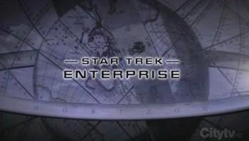 | All'inizio, la scritta con il nome della serie cambia colore da bianco a nero. |
|
|
Nave polinesiana, uno dei primi popoli che ha utilizzato le stelle e i venti per esplorare il mare. |
|
|
H.M.S. Enterprize (1709-1749) |
 |
Un galeone fa fuoco con i suoi cannoni. |
| 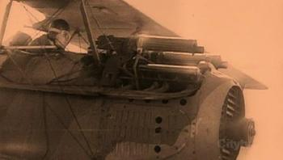 | Un aereo fa fuoco con le mitragliatrici. |
| 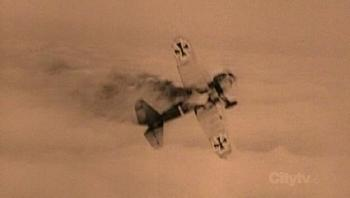 | Un aereo tedesco (probabilmente della Prima Guerra Mondiale) viene abbattuto. |
| 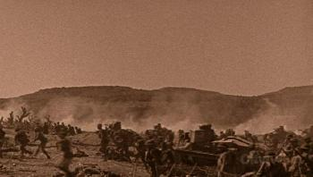 | Durante la guerra in trincea della Prima Guerra Mondiale, un attacco della fanteria con la copertura di uno dei primi esemplari di carri armati, un Renault FT35 francese. |
| Il logo dell'Impero sovraimpresso a una marcia di soldati. | |
| 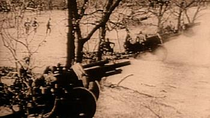 | Cannoni della fanteria. |
 |
Lanciafiamme. |
 |
Aerei da guerra. |
| 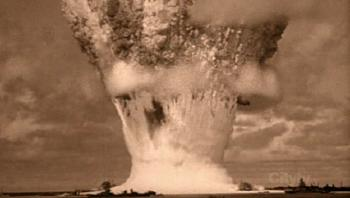 | Esplosione nucleare alle Bikini. Il nome in codice era Baker, detonata il 25 luglio 1946 alle 08:35, per una potenza di 21 kilotoni. |
| 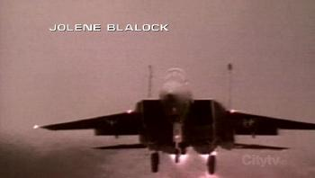 | F15 Eagle della USAF in fase di decollo. |
 |
Un sottomarino sovietico di classe Alfa lancia un siluro. La scena è tratta da The Hunt for Red October (Caccia all'Ottobre Rosso), un film prodotto dalla Paramount nel cui cast c'è anche Gates McFadden; l'Alfa è il Konovalov di Tupolev. Nel film la scena la si trova a [T:2:04:12] ed è quando Tupolev lancia il siluro che colpirà poi il suo stesso sottomarino; per questa sigla, la scena è stata ribaltata specularmente. |
| 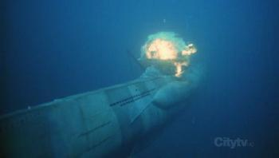 | Un sottomarino esplode. La scena è tratta dal film U-571 della Paramount. |
| 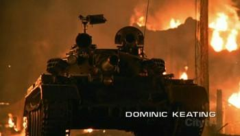 | Un carro armato T-82 russo nelle strade di una città in fiamme. |
| 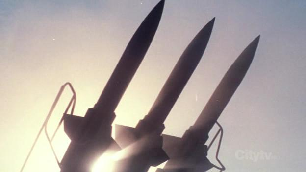 | Batteria di missili. |
| 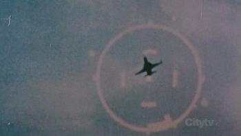 | Bersaglio inquadrato da un mirino elettronico. La scena è tratta da Top Gun, un film prodotto dalla Paramount. Nella scena è stato usato un F5 riverniciato di nero, anche se nella narrazione veniva detto che si tratta di un MIG 28, che non esiste. |
| 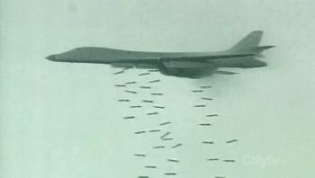 | Un B1b Lancers impegnato in un bombardamento a tappeto. |
 |
|
| 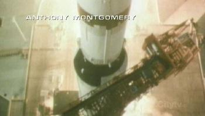 | Partenza di un vettore Saturno. |
 |
Robert Goddard. |
| 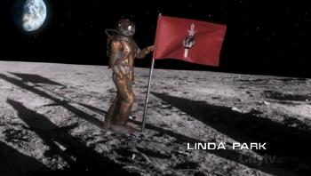 | L'Impero conquista la Luna. |
 |
Phoenix durante il primo volo nel momento in cui estende le gondole di navigazione WARP. |

|
La nave che compare nella penultima scena della sigla originale vista anche in The Expanse impegnata in un bombardamento orbitale. |
| 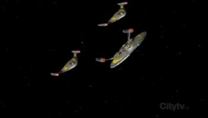 | L'Enterprise in formazione d'attacco con altre due navi. |

|
Bombardamento di una città aliena. La scena è quella della città dei Vaadwaur vista in Dragon's Teeth. |
| 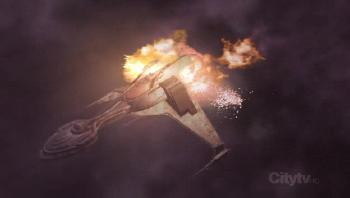 | L'Enterprise distrugge la nave di Duras prima di entrare nella Distesa Defica. |
| 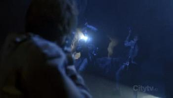 | Assalto dei MACO. |

|
L'Enterprise attacca e distrugge una nave aliena. La sequenza è riciclata da United, in cui la nave romulana con le sembianze dell'Enterprise distrugge una nave rigelliana. |
| 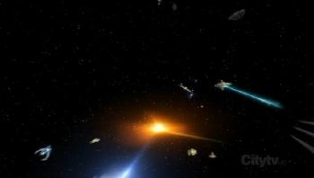 | L'Enterprise e, probabilmente, altre navi attaccano e mettono in fuga una flotta Xindi. |
| 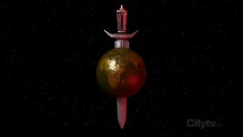 | L'emblema dell'Impero Terrestre. |